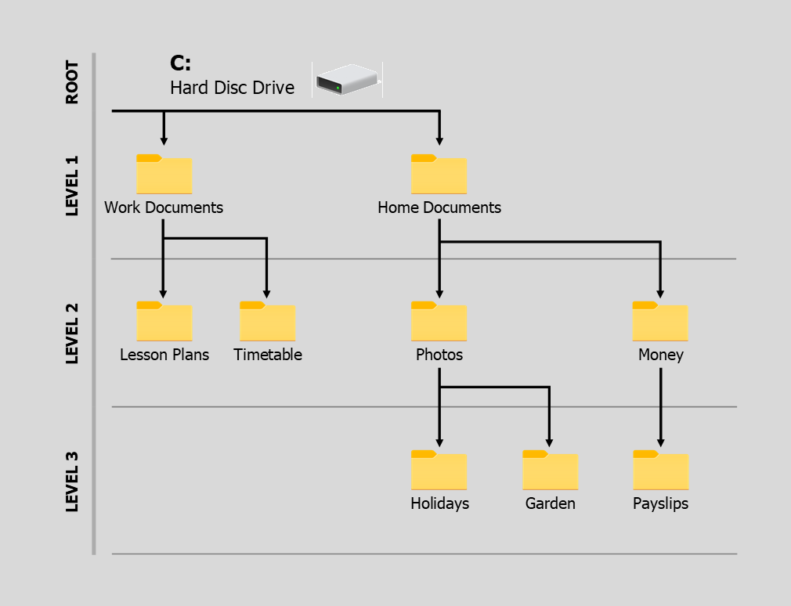

Files & Folders
Navigating Folders
HomeWhen you look in folders, and move from one folder to another, it is known as Navigating. If your job or study involves computers, you might sometimes be asked to navigate (or go) to a folder. You will then need to find the folder in question. Try the tasks below, see if you can identify the correct folder by moving your mouse over it in the diagram. Look out for the green tick when you get it right!


Point to the Hard Disk Drive
Move the mouse to the Work Documents folder
Point the mouse to the Home Documents folder
Move to any folder within the Photos folder
Identify the folder one level above Payslips